CS Students Enjoy Frisbee in the Sun
Written by Amy Meta on 05-01-2026Our Event
For a springtime event, CSSB wanted it to take place outdoors. This is because March was beginning, and the weather would be very nice for the next week. We had gathered for one of our regular meetings on Wednesday evening, and discussed potential plans. Finally, after long deliberation, we came to the conclusion that a frisbee & darts event was the way to go. Badmintion? Possible, but difficult to obtain a net. Same with volleyball. Spikeball was a particular point of interest, and if ever we were to get a set, it would be good to make this a regular occurrence on the EQuad. Regardless of our many ideas, only one stuck – frisbee, darts, and ice cream to cool off on a very hot day. All left that meeting teeming with ideas for our new plan, satisfied with concocting such an extravaganza.
Preparation
This was to be a monumental event, taking place in view of everybody in each of the engineering buildings. We were to be surrounded by students on all sides, holed up in their areas of study, working hard. Little did they know that there was to be a free-play frisbee game right outside, if only they would look out the window.
Knowing this fact, CSSB wanted to make sure that this event was the highlight of the year, past the dismal darkness of winter, past all of the storms and long periods of waiting for weather to be nice again. This was to be the crux between Winter and Spring, the hinge on which happiness and light entered the OU Engineering College once again. And what better way to accomplish this, than to hold our festivities in plain sight? To be an open paradise, a beacon of pure joy and free frivolity? Such was our goal, anyways. We started by determining logistics. We needed: - 1 dart board (ordered off Amazon by our beloved faculty advisor, Dr. Atiq) - 1 frisbee, at least - 10-15 ice creams, preferably in bar form according to popular vote - a reservation for the E-Quad, obtained after grueling period of waiting - a reservation for 2 tables and 5 chairs, helpfully orchestrated by EClub staff and volunteers - a roll of tape for such trivialities as setting up the dart board - 4 AAA batteries for lighting up the dart board
As you can probably tell by now, this dart board was demanding quite a bit of our forethought, amplified by such stressors as potentially lights not working, magnet not being strong enough to hold darts in place after they were thrown, etc. Very much the grievance of this event.
We set out the day of, in quest to retrieve some of these items. We piled into Dr. Atiq's car and headed for Walmart, enamored with the thought of what we would buy. The toy section was tackled first, because of course the frozen items would have melted if we'd prioritized them. Many dart boards were on display, with all sorts of features: Electronic, Reversible, Bristle dartboards…the list was endless. For a moment we debated and discussed, we were quickly paralyzed with this decision. Which to get? What would be the cost? Would we be driving home with a sinking feeling in our chests, the slow sting of regret creeping upon us? The wrong board could not be chosen. Finally, we decided on a Magnetic dartboard; this was exciting without being overbearing, sensible without unwanted complexity.
Frisbees were a complicated subject for our group, as we already had one; Dr. Atiq had a plastic frisbee in his office which worked as well as any. However, something wonderful had caught our eyes…a dodge frisbee, with hope of hurling it at each other in malicious glee…the temptation was too much to resist.
Ice cream was next, and the options were even more endless here, if that was possible. Such displays! Such is the lure, the distinctly modern trap of never-ending consumption. Correct choice was also of necessity here; we agreed upon a box of fudge bars, unassuming yet overwhelming the tasters' buds with chocolate and a tantalizing, melt-in-your-mouth sensation. To keep these cool, we lastly stopped by the ice section and got 1 bag of ice for good measure. There would be no betting on shade alone to be enough to keep these bars cool.
Eventually, we got back to campus and obtained a working cooler, courtesy of the Computer Science faculty and staff. As far as gifts go, we were also overwhelmed by the sheer kindness of EClub, benevolently bestowing upon us their tables, and chairs, and pack of waters on such a hot tiresome day. CSSB began to set up, and all had an extra spring in their step. The festivities were about to begin.
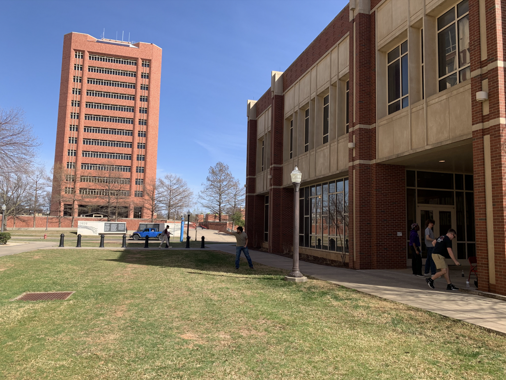
Figure 1. The dart board we eventually purchased, magnetic with LED lights. It would have been quite a spectacle had we gotten the lights working. That was the ultimate snag in our nearly-flawless execution of this plan; the batteries (obtained shortly thereafter arriving on campus) were rendered completely useless, due to the fact that we could not get the cartridge open. Try as we might, it was sealed with a singular screw, a miniscule obstable that ultimately shut out the lights of the board. As it happened, as we toggled with the screw using this and that, we collectively felt the lights leave our eyes as we realized that this feature would always remain a mystery to us. The power of a screwdriver was never wished for more than by us, in that exact moment, crushed with our defeat.
Game
The game, the game! The game of ultimate frisbee is a uniquely interesting one, not constrained by the bounds of time or ability but rather dictated by something as fleeting as the wind. These were the rules we played by:
- Rule 1: Two teams were chosen, members solicited by each of the two team captains according to their secret plans to win the game. Various psychological tactics used at this initial stage. Players were picked in no particular order, but each move was carefully calculated by one captain, in order to psych out the other. Nerves and opposition intimidation were in the air.
- Rule 2: Concrete frisbee rules were decided, since there are many ways to play ultimate frisbee. For the purposes of this event, the goals were described as follows: 1) Team 1 would have to score by getting their frisbee across the diagonal sidewalk leading to Devon; not the sidewalk itself, but the lamp post which drew an imaginary straight line to the other side of the lawn. 2) Team 2 needed to get the frisbee on the opposite side, by Jenkins street; there was a perfectly straight sidewalk which acted as their goal, allowing for Team 1's intuition to kick in and propel them past that clearly-defined boundary, in order to gain a point.
- Rule 3: If thrown out-of-bounds by one team, the frisbee was in possession of the opposing team.
- Rule 4: You are allowed to use the wind to dictate the direction your frisbee flies in, that is part of the genius of the game.
- Rule 5: You are not allowed to push, tackle other teammates, either in anger for their success, or in a genuine hope of stealing the frisbee before they can catch it. But this sort of goes without saying.
Images
Rather than explain the numerous highs and lows of our game, we instead have chosen to display these images with the hope of a more immersive secondhand experience for our readers:
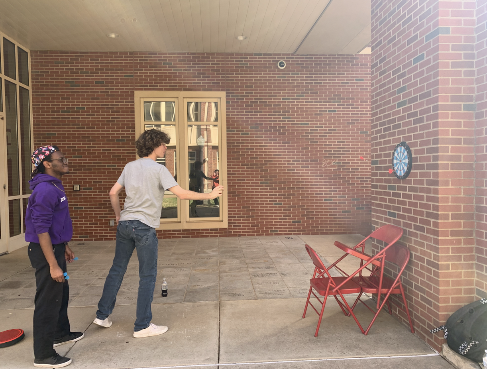
Figure 2. Sarkey's Energy Center looms in the background as our group prepares for the game, by warming up their throws and setting up the dart board.
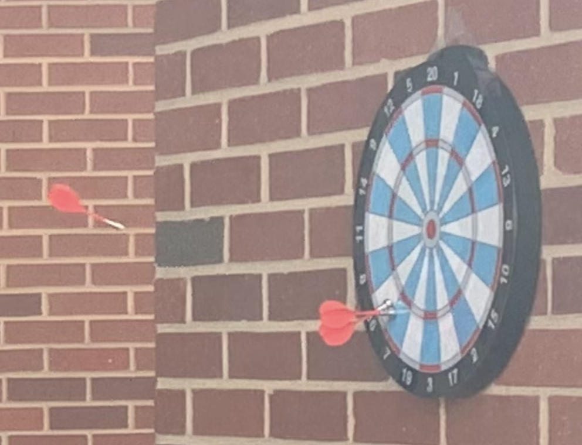
Figure 3. CSSB takes on the magnetic dart board, placed on this brick wall after an intense period of trial and error…the chairs were an attempted tower for our board to rest its weight on…ended up being held up by 2 pieces of clear tape…the tower remains, fallen, as seen in the image, as a testament to our struggles in trying to set up this dart board. As you can see, however, the magnetic aspect works perfectly!
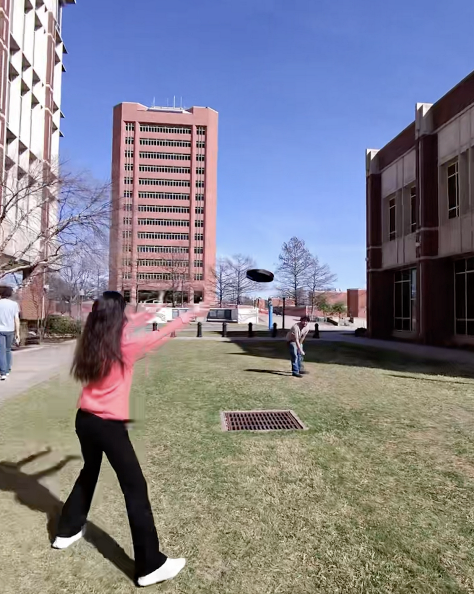
Figure 4. A closer look at this board, two darts held to the board by internal magnets, and a third flying to land on the board, hopefully.
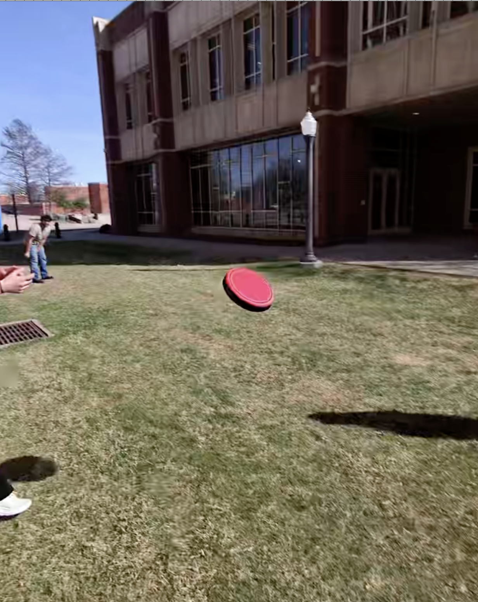
Figure 5. That is me trying to catch the frisbee from the opposing team's captain; for those unaware, it is the black disc flying through midair (it looks black here, but is actually dark red).
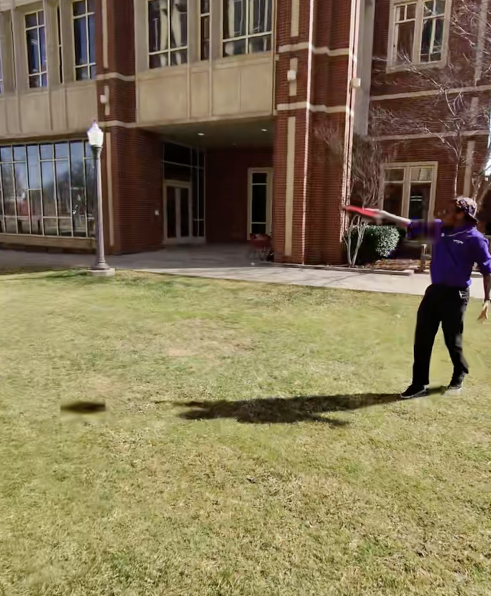
Figure 6. Oh, there it goes, fly frisbee!! Fly!! See us all standing in awe of this spectacle.
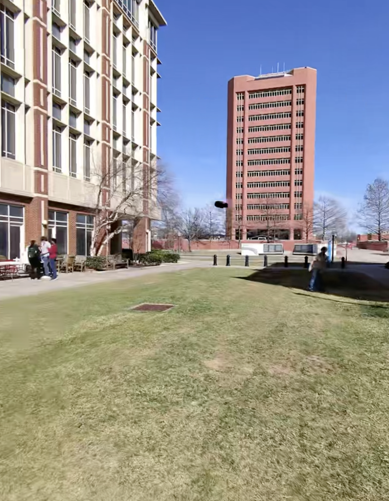
Figure 7. Throwing the frisbee – notice the difference between the actual throw and the shadow; the shadow indicates that it has already left his hand at that point.
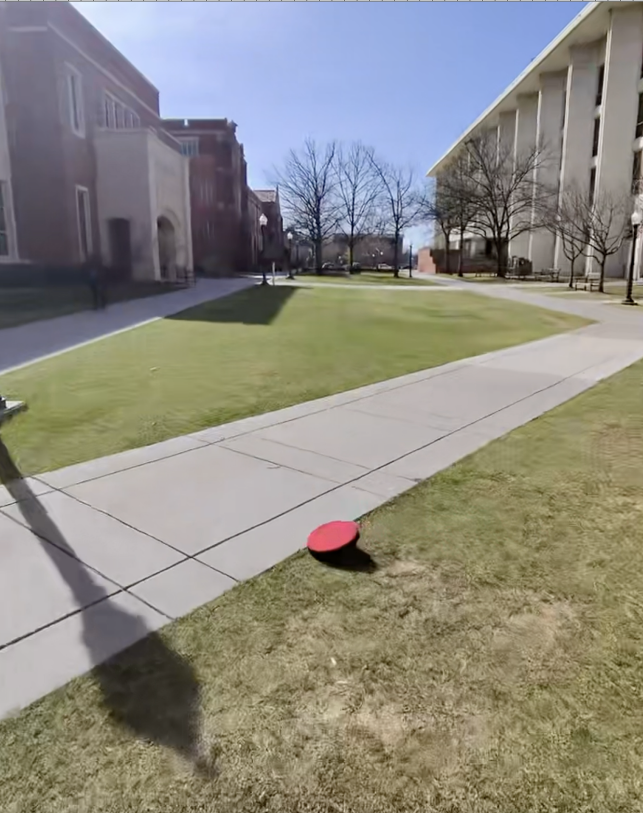
Figure 8. Throwing the frisbee – disc looks slightly smaller in this still. Also, our group is huddled at the very left of this picture, and those white tables and red chairs are the ones courtesy of EClub. They are standing right behind our cooler, which holds many ice creams.
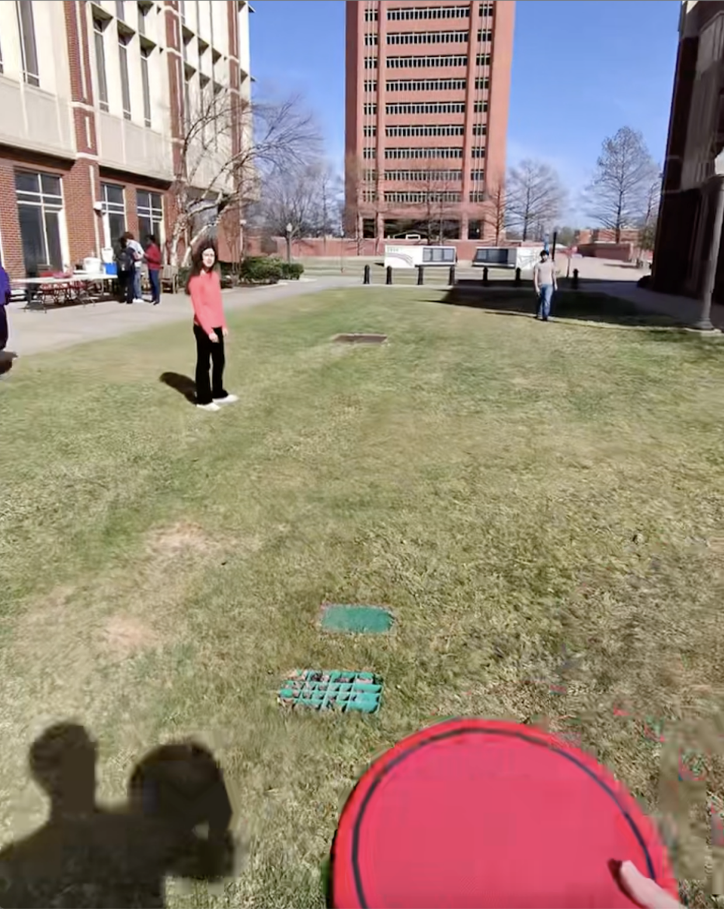
Figure 9. There's that diagonal sidewalk earlier mentioned, with the shadow of said lamp post looming very ominously to the left. This is the opposite end of the EQuad, but we did not play on that lawn in the distance.
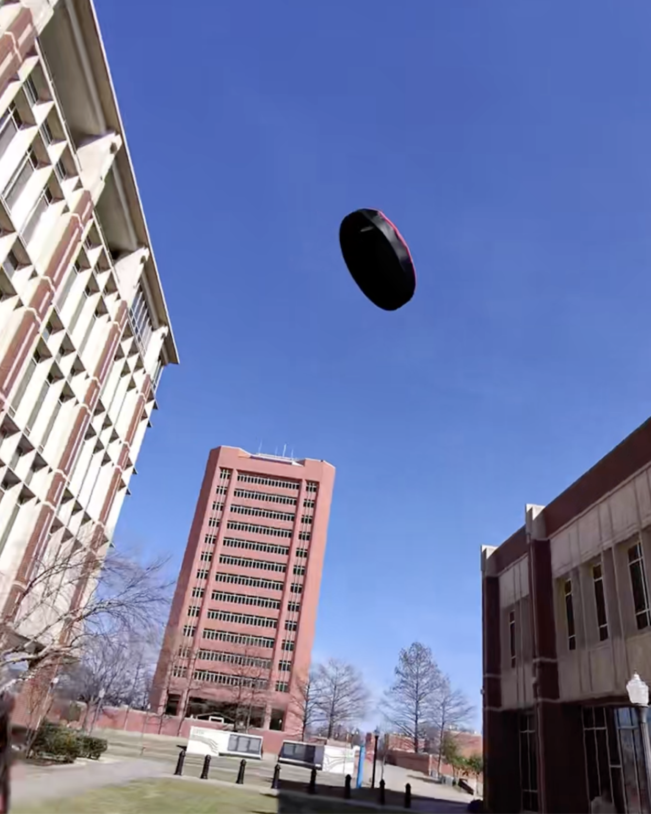
Figure 10. Owner of Ray-Ban Meta Glasses holding frisbee, about to throw. You can see the slight outline of the glasses in his shadow in the bottom left of this still.
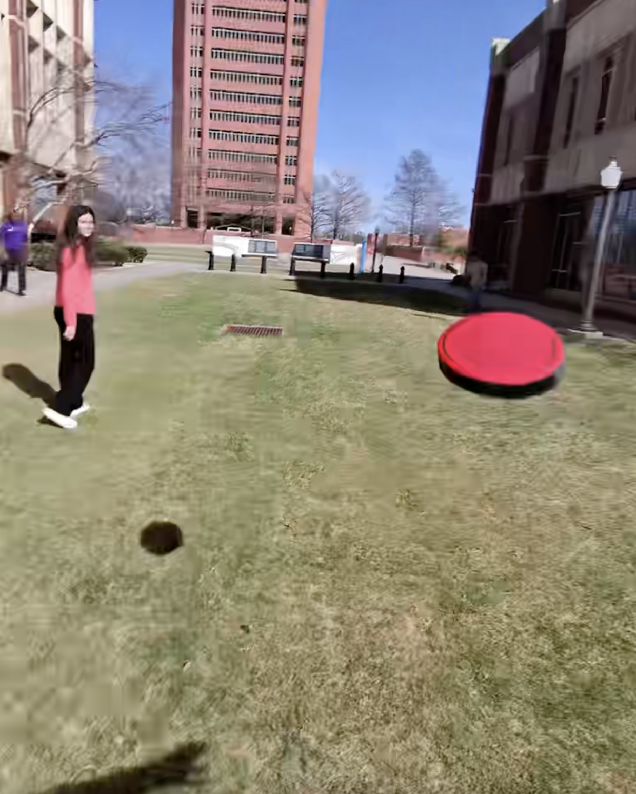
Figure 11. Frisbee imposes itself upon said Glasses Owner. What an odd threat it looks, taller than Sarkey's itself, the pinnacle to which the buildings bow down to…the trees below look like mere ants in light of its thundering presence…
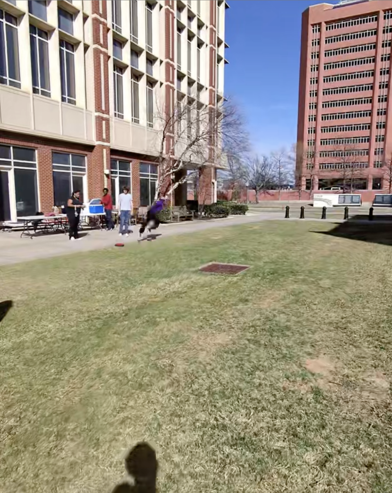
Figure 12. What a strange picture, the red disc clearly out of place amidst the all-natural setting, the much smaller dot at a weird angle, indicating its shadow, the hand at the very, very bottom of the picture stretched out in a pose suggesting it had just flung the frisbee outwards.
Conclusion
And such ends our video collection. As mentioned before, this event was a huge success. 18 people attended, and all of the ice cream was gone by the end (granted, we DID end up throwing away 5 or 6 bars that had melted despite the ice in the cooler), demonstrating that popular appeal was of the utmost importance when choosing what will be catered at future events. That is a good principle common to all types of organizations, and one that is good to remember. Another thing, is that there are a total of 13 figures in this study, which is interesting because our event took place on March 13th, a Friday. Coincidentally it should be noted that this was the Friday before Spring Break, so we would consider trying this experiment again on a day where half the campus had not already left to get much-needed rest. Especially the Engineering students. But for those who remained on campus during this time, who were intrigued by the mysteries of the games of frisbee and darts, this springtime event for CSSB turned out to be a very necessary break-before-the-real-break, an island of solace in the midst of all our turmoil regarding exams, future careers, and whatever other life events might be making people weary and drained and unable to appreciate the innate goodness of a new season, the season of Spring. We, at CSSB, believe that our event helped to facilitate that newfound appreciation!